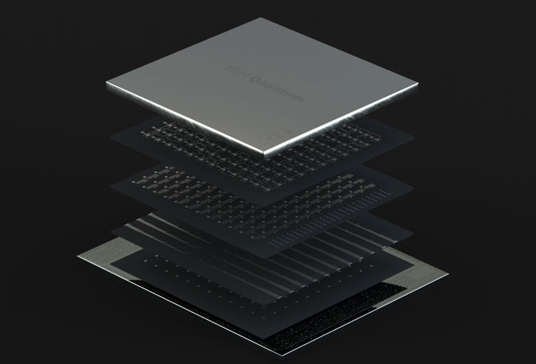

Сегодня компания IBM официально представила новые квантовые процессоры и концепцию коммерческих квантовых компьютеров завтрашнего дня — машин Quantum System Two. По словам компании, она подошла к порогу, за которым начинается новый и удивительный мир квантовых вычислений, который превосходит все мыслимые возможности классических компьютеров. Дверь в этот мир ещё не открыта, но IBM уже знает, как это сделать.
Решающим фактором входа в мир массовых квантовых вычислений стала разработка квантового процессора с числом сверхпроводящих кубитов, превышающим сто штук. Вопрос масштабирования для сверхпроводящих кубитов — это самое больное место, поскольку все они помещены в ограниченную по объёму криогенную установку и требуют подвода множества кабелей для управления и измерения квантовых состояний. Управляющая и измеряющая аппаратура также крупномасштабная, как и очень сложные цепи сопряжения с внешними системами интерпретации сигналов или, проще говоря, с обычными суперкомпьютерами, которые управляют квантовыми системами.
Управлять десятком–другим сверхпроводящих кубитов дело нехитрое, но когда их число переваливает за сотню и стремится к тысяче и больше — инженерная задача вместить всё это в разумный объём становится архисложной. В IBM эту задачу решили и представили концепцию масштабируемой квантовой системы Quantum System Two и концепцию машинных залов из множества таких систем.

Но прежде скажем несколько слов о новом 127-кубитовом процессоре IBM Eagle. Архитектура размещения кубитов на одном из слоёв процессора Eagle наследует архитектуру Heavy-hex из чередующихся шестиугольников, которую IBM использовала в 27-кубитовых процессорах Falcon, на которых она сегодня производит квантовые компьютеры Quantum System One. На углах и гранях шестиугольников размещены кубиты, которые контактируют с двумя или тремя соседними кубитами и могут быть связанными с ними. Но 127-кубитовый процессор резко отличается от 27-кубитового тем, что он выполнен многослойным в одной упаковке.
Без многослойной конфигурации масштабирование было бы невозможным. Управляющие и измеряющие квантовые состояния линии разнесены на нескольких уровнях, что помогло добиться компактности. Также IBM перешла на мультиплексирование сигналов, тогда как раньше каждый кубит управлялся индивидуальным набором проводников и индивидуальными блоками электроники. Без всего этого перешагнуть 100-кубитовый рубеж было бы невозможно, заявляют в компании. Также предложенный путь открывает возможность быстро пройти 500-кубитовый и 1000-кубитовый рубеж, что выглядит просто фантастически.
Высокоплотное размещение кубитов и уплотнение интерфейсов позволило освободить достаточно много места в криогенной системе. Это подводит нас к новой концепции квантовой вычислительной стойки, которую в IBM назвали Quantum System Two. Компания IBM разрабатывает стойку совместно с инженерами компании Bluefors.
Компания Bluefors работает над созданием новой криогенной платформы с большим внутренним пространством для более мощного вспомогательного оборудования и удобства обслуживания системы. Как это будет выглядеть, представлено в видео выше, где также раскрывается концепция машинных залов на новой платформе.
В настоящий момент у IBM нет ни одной работающей системы нового поколения. Ожидается, что первая система Quantum System Two будет введена в эксплуатацию в 2023 году.